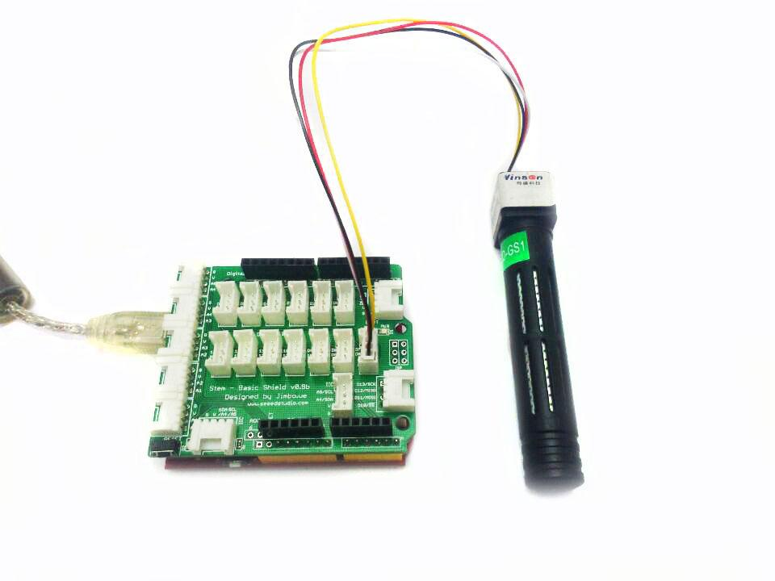
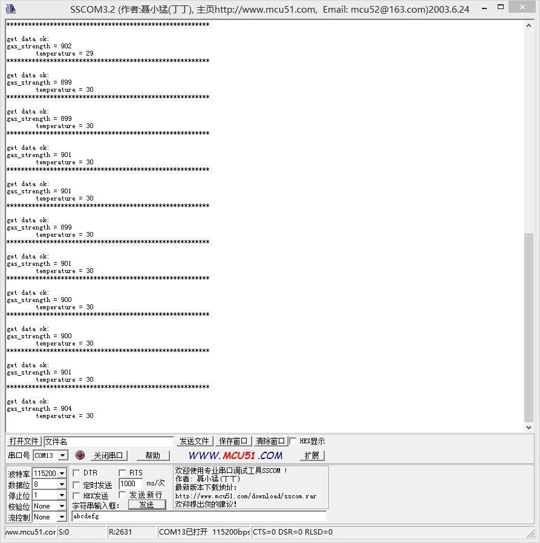

The Grove - CO2 Sensor module is infrared CO2 sensor high sensitivity and high resolution.
Infrared CO2 sensor MH-Z16 Is a general-purpose, small sensors, the use of non-dispersive infrared (NDIR) Present in the principle of the air CO2 Detect, with good selectivity, oxygen- dependent, long life, built-in temperature sensor, temperature compensation, with UART output, easy to use.
It can be widely used in HVAC and indoor air quality monitoring, industrial process monitoring and security, agriculture and livestock production process monitoring.
Note that The sensor value only reflects the approximated trend of gas concentration in a permissible error range, it DOES NOT represent the exact gas concentration. The detection of certain components in the air usually requires a more precise and costly instrument, which cannot be done with a single gas sensor. If your project is aimed at obtaining the gas concentration at a very precise level, then we do not recommend this gas sensor.
Connect the module with Grove Shield using like following picture and use the program below to gain the voltage.
Please note that the best preheat time of the sensor is about 180s. For the detailed information about the sensor, please refer to the datasheet.

#include <SoftwareSerial.h> #define DEBUG 0 const int pinRx = 8; const int pinTx = 7; SoftwareSerial sensor(pinTx,pinRx); const unsigned char cmd_get_sensor[] = { 0xff, 0x01, 0x86, 0x00, 0x00, 0x00, 0x00, 0x00, 0x79 }; unsigned char dataRevice[9]; int temperature; int CO2PPM; void setup() { sensor.begin(9600); Serial.begin(115200); Serial.println("get a 'g', begin to read from sensor!"); Serial.println("********************************************************"); Serial.println(); } void loop() { if(dataRecieve()) { Serial.print("Temperature: "); Serial.print(temperature); Serial.print(" CO2: "); Serial.print(CO2PPM); Serial.println(""); } delay(1000); } bool dataRecieve(void) { byte data[9]; int i = 0; //transmit command data for(i=0; i<sizeof(cmd_get_sensor); i++) { sensor.write(cmd_get_sensor[i]); } delay(10); //begin reveiceing data if(sensor.available()) { while(sensor.available()) { for(int i=0;i<9; i++) { data[i] = sensor.read(); } } } #if DEBUG for(int j=0; j<9; j++) { Serial.print(data[j]); Serial.print(" "); } Serial.println(""); #endif if((i != 9) || (1 + (0xFF ^ (byte)(data[1] + data[2] + data[3] + data[4] + data[5] + data[6] + data[7]))) != data[8]) { return false; } CO2PPM = (int)data[2] * 256 + (int)data[3]; temperature = (int)data[4] - 40; return true; }
